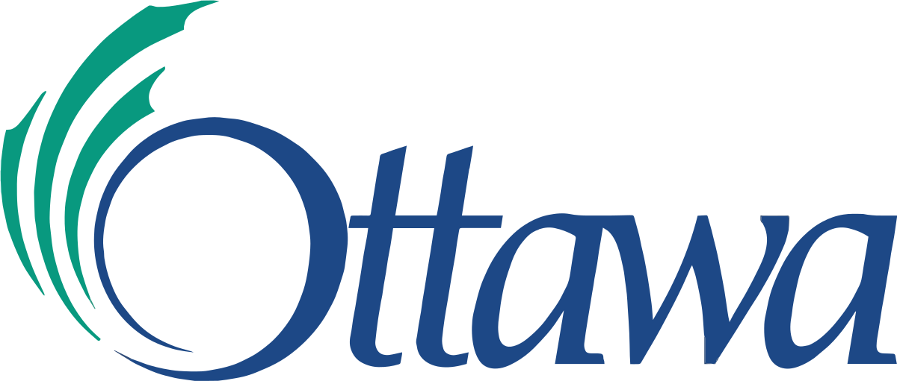
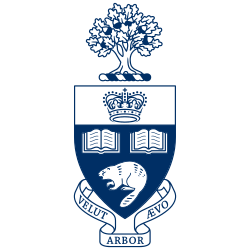

Created a chatbot customer support AI application for businesses to use as apart of the Headstarter AI fellowship. Built with the OpenAI API and postman with a team of 3 in a quick, constantly changing atmosphere.
Application that predicts what a software engineer would make depending on several variables. Used Jupyter Notebooks to clean data, and plot trends for prediction.
Camp Counselor • Worked with a vast array of young children coming from various backgrounds totaling around 500+ kids. • Maintained strict supervision, and authority within camps, but also created great rapport with kids and parents. • Took on leadership positions within camps and took on much of the camp’s clerical work. Lifeguard and Swim Instructor • Taught swimming skills to a diverse group of children and created lessons to optimize learning. • Maintained appropriate safety protocols and regularly kept up with procedures and required certifications. • Created a great rapport with the public and treated high stress injury situations with effectiveness and professionalism.
University of Toronto: I am a current student at the University of Toronto Majoring in Computer Engineering.
